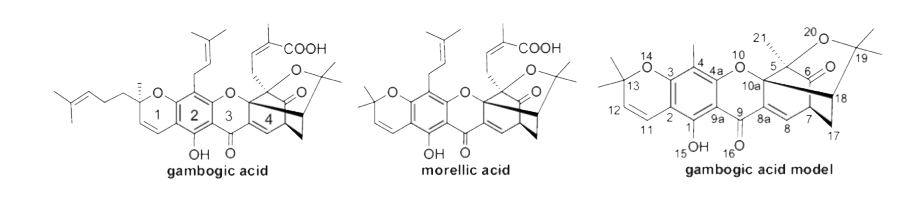
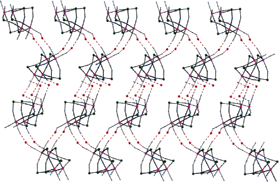
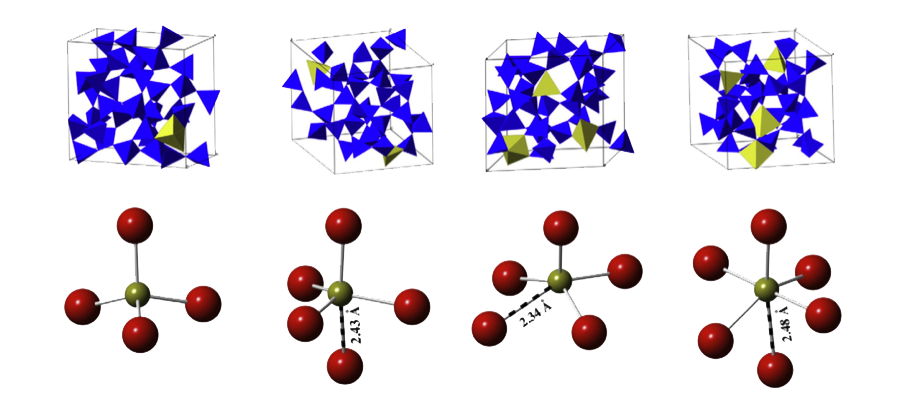
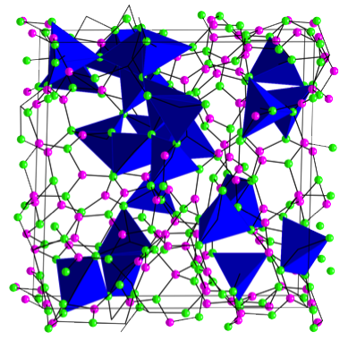
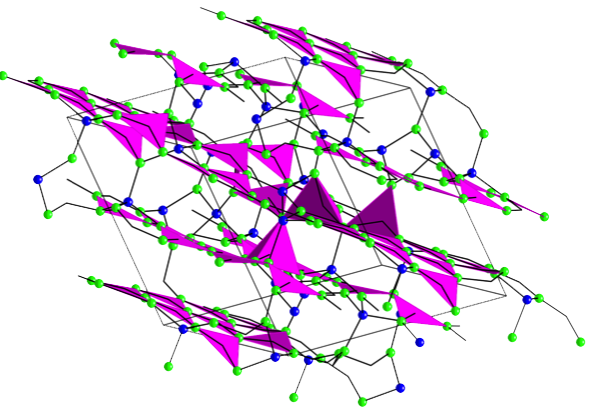
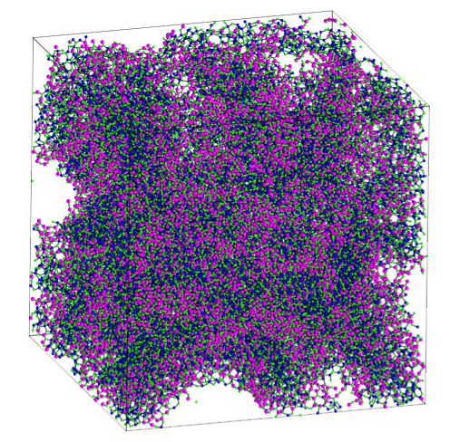

I am a Chemist by education and a coder by passion...
Originally from India, I stay in Texas. I am pursuing a Ph.D. in chemistry at the University of Texas at Arlington. I am also a trained Kathak dancer. I love to cook, travel and code - all in that order.
Undergraduate Research: Google doesn't always know everything
I modeled Gambogic acid, and its derivatives using different force fields (MM3*, AMBER*, MMFFs and OPLS2005) and B3LYP method in Gaussian. Predicting the docking of Gambogic acid derivatives with CB2 receptors found in our brain by performing conformational searches
Part of the research is published in: http://dx.doi.org/10.1016/j.cplett.2011.06.035
Masters Research: Chemistry can be fun
I learnt the synthesis of Pseudohalogenometallate Bridged Complexes. These are complex supra-molecular entities with transition metals (Ni, Co, Mn, Fe, etc.) and ligands (polyamine, hetero-cycles and Schiff base). Potential applications are: as porous and luminescent materials.

Ph.D. Research: Joining the pro league
Modeling metal-silicate glasses: HfO2-SiO2 for applications in microelectronics.
Research published in: http://dx.doi.org/10.1016%2Fj.jnoncrysol.2015.02.022
Modeling composite coating materials that are tough, can withstand an insane amount of heat and prevents oxidation with air – Zr-Si-B-C-N composites.
Research published in: http://dx.doi.org/10.1016/j.actamat.2016.11.061
Modeling nano-porous 2-D materials with amorphous mixtures of Si3N4 and BN. I also investigate thermal conductivity of these materials as a function of BN content. (Paper under review)
  Comparative study of modeling amorphous Si3N4 using every-empirical-potential ever made.. (No kidding). In this project I re-discovered a long forgotten potential is best suited to model Si-N material. (Paper under review)
Conference presentations and posters
Poster: “Structure, thermochemistry and mechanical properties of glass and amorphous materials at Advanced School on Glasses and Glass-Ceramics (Sao Carlos, Brazil)
Poster: “Structure and Thermochemistry of Borosilicate Glass” at ICTP (Trieste, Italy), ICMR (UC Santa Barbara, CA) and ACS-SWRM (Waco, TX)
Oral presentation: “Structure and Thermochemistry of Hafnia-Silicate Glass” at ACS (Dallas, TX), ACS-MiM (2013 & 2014) and GOMD-DMG (Aachen, Germany), Engine Ceramics Workshop (Boulder, CO)
Oral presentation: “First principles modeling and simulation of ZrSiBCN ceramics : An approach to develop hard-coatings” at MS&T 2015 (Columbus, OH) and ACS-SWRM (Fort Worth, TX)
Oral presentation: "Network modeling and investigation of thermal conductivity of a-SiBN" at MS&T 2016 (Salt Lake City, UT), GOMD-DMG (Madison, WI)
Workshops
Advanced School on Glasses and Glass-Ceramics at Sao Carlos, Brazil, August 2015
Participant at ICMR: Materials on 3D: Modeling and Imaging at Multiple Length Scales, University of California at Santa Barbara, August 2013
Participant in the 16th International Workshop on Computational Physics and Materials Science: Total Energy and Force Methods and the Hands-on Tutorial on Electronic Structure Computations at Abdus Salem International Center for Theoretical Physics, Trieste, Italy